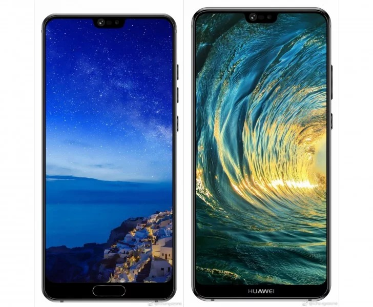
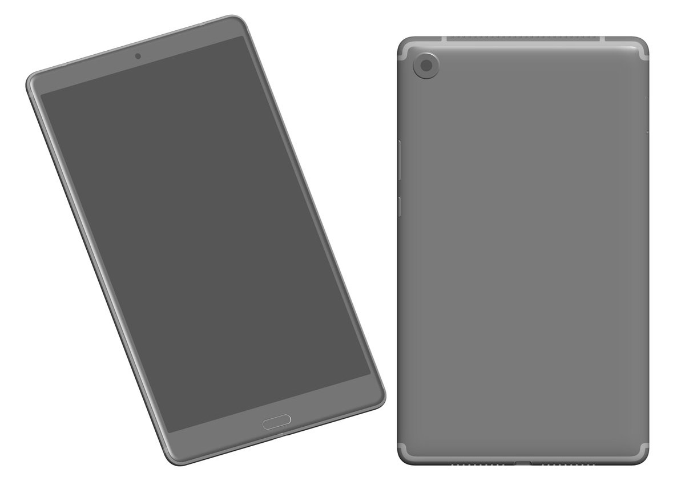
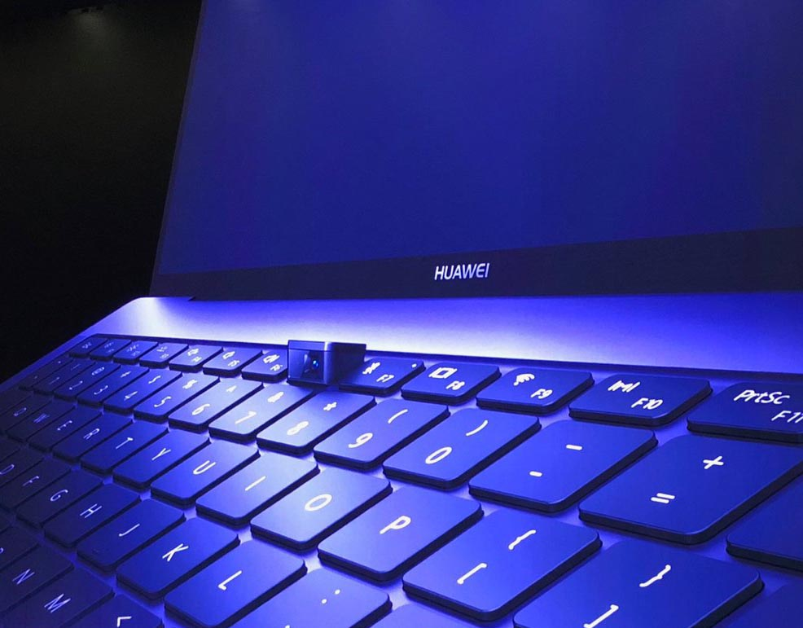

Появились качественные изображения смартфонов Huawei P20 и Huawei P20 Plus
28.02.2018
Сегодня мы узнали, что Xiaomi анонсирует обновленный безрамочный смартфон Mi Mix 2S с SoC Snapdragon 845 27 марта. То есть, Xiaomi Mi Mix 2S будет представлен в один день с новым флагманским смартфоном Huawei имиджевой серии P. В недавнем тизере Huawei подтвердила главную особенность грядущей новинки, а также развеяла все сомнения касательно ее названия. Между тем, инсайдер под ником @ichangezone, который часто публикует достоверную информацию о новинках Huawei, опубликовал качественные изображения моделей Huawei P20 и Huawei P20 Plus. Изображения демонстрируют лицевую часть новинок, в очередной раз подтверждая вырез в верхней части дисплея устройства – такой же вырез, как у экрана iPhone X. В этом месте располагаются фронтальная камера, датчик приближенности и вырез громкоговорителя. Единственное отличие между моделями с этого ракурса – физическая кнопка Home, которая есть у обычной модели, но отсутствует у Huawei P20 Plus. Таким образом, у Huawei P20, вероятно, сканер отпечатков пальцев будет встроен в кнопку Home на передней панели, а Huawei P20 Plus расположится либо под поверхностью экрана, либо в кнопке питания. Отметим, что старшая модель линейки, если верить предыдущим утечкам, должна первой на рынке получить камеру, состоящую из трех фотомодулей (12Мп+16Мп+16Мп).
Источник: GizmochinaСтали известны характеристики и цены разных версий планшета Huawei MediaPad M5
27.02.2018
В скором времени ожидается презентация новых планшетов Huawei Matebook и MediaPad M5. Скорее всего, они будут представлены во время проведения вставки Mobile World Congress 2018. Но ещё до начала выставки в сеть просочились сведения о технических характеристиках и ценах некоторых из этих устройств. Судя по имеющейся информации, планшет Huawei MediaPad M5 будет представлен в трёх модификациях, отличающихся диагональю дисплея и некоторыми другими характеристиками: MediaPad M5 8, MediaPad M5 10 и MediaPad M5 10 Pro. Базовая наиболее компактная версия MediaPad M5 8 фигурирует под кодовым названием Schubert и имеет модельный номер SHT-XXX. Объём оперативной памяти составляет 4 ГБ, а ёмкость встроенного хранилища – 32 ГБ. Цена модификации только с модулем Wi-Fi заявлена на уровне €329, а стоимость версии с модулем LTE составит уже €380. Модель Huawei MediaPad M5 10 получила кодовое название Cameron и модельный номер CMR-XXX. Устройство также оснащено оперативной памятью объёмом 4 ГБ и встроенной флэш-памятью 32 ГБ. Модификация с модулем Wi-Fi оценивается в €379, а версия с модулем LTE – в €420. Топовая модель Huawei MediaPad M5 10 Pro известна под кодовым названием Cameron Pro. От базовой версии MediaPad M5 10 она отличается наличием увеличенного до 64 ГБ хранилища и поддержкой цифрового пера M-Pen. В этом случае предлагается только одна модификация, в которой уже изначально доступен модуль LTE. Цена Huawei MediaPad M5 10 Pro составляет €520. Предыдущие утечки также свидетельствовали, что планшет MediaPad M5 8 содержит 8,4-дюймовый дисплей с разрешением и процессор Kirin 960. В качестве операционной системы, якобы, используется 8.0 на базе Android 8.0 Oreo. Также сообщалось о наличии батареи ёмкостью 4980 мАч, порта USB-C и модема Cat. 4 LTE. А вот 3,5-миллиметрового звукового разъёма, судя по всему, в устройстве нет.
Источник: GizmochinaНоутбук Huawei MateBook X Pro получил тонкие рамки дисплея и выдвигающуюся из клавиатуры веб-камеру
25.02.2018
Компания Huawei представила на выставке Mobile World Congress 2018 свой новый ноутбук MateBook X Pro. Новинка получила дизайн с тонкими боковыми гранями дисплея. Как отмечает производитель, экран занимает 91% лицевой панели. В ноутбуке Huawei MateBook X Pro применяется сенсорный 13,9-дюймовый дисплей с разрешением 3000×2000 точек. Так как боковые рамки вокруг дисплея слишком тонкие, то для веб-камеры инженерам пришлось искать другое место размещения. В результате, выдвижная камера интегрирована в клавиатуру. Представленная модель может содержать процессор Intel Core i5 или Core i7 восьмого поколения. Также сообщается о наличии дискретной видеокарты NVIDIA GeForce MX150. Кроме того, в устройстве доступны два порта USB-C, один порт USB-A, кнопка включения питания с интегрированным сканером отпечатков пальцев и аккумуляторная батарея, которая обеспечивает до 14 часов автономной работы при обычном использовании. Масса новинки составляет 1,33 кг. Новый ноутбук Huawei MateBook X Pro поступит в продажу этой весной по рекомендованной розничной цене от €1499.
Источник: The Verge